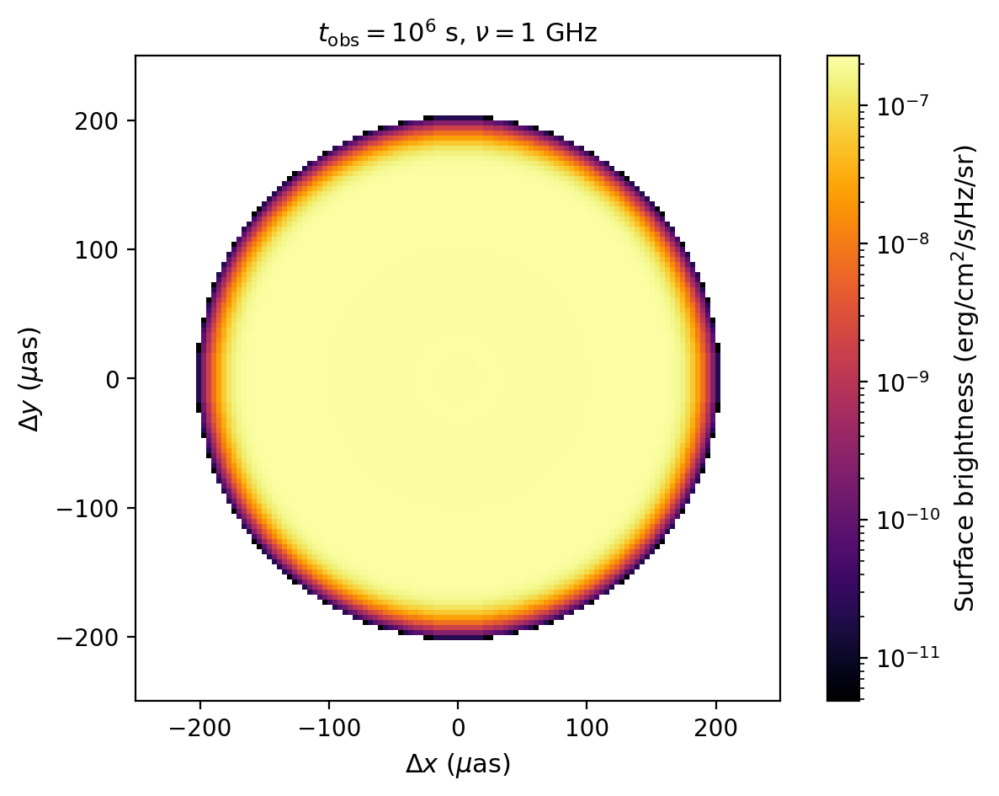
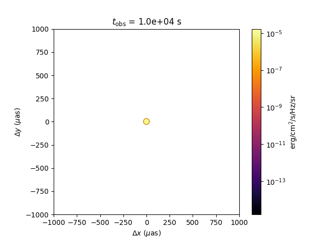
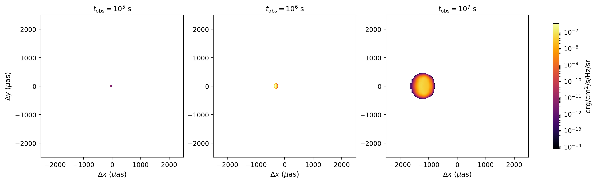
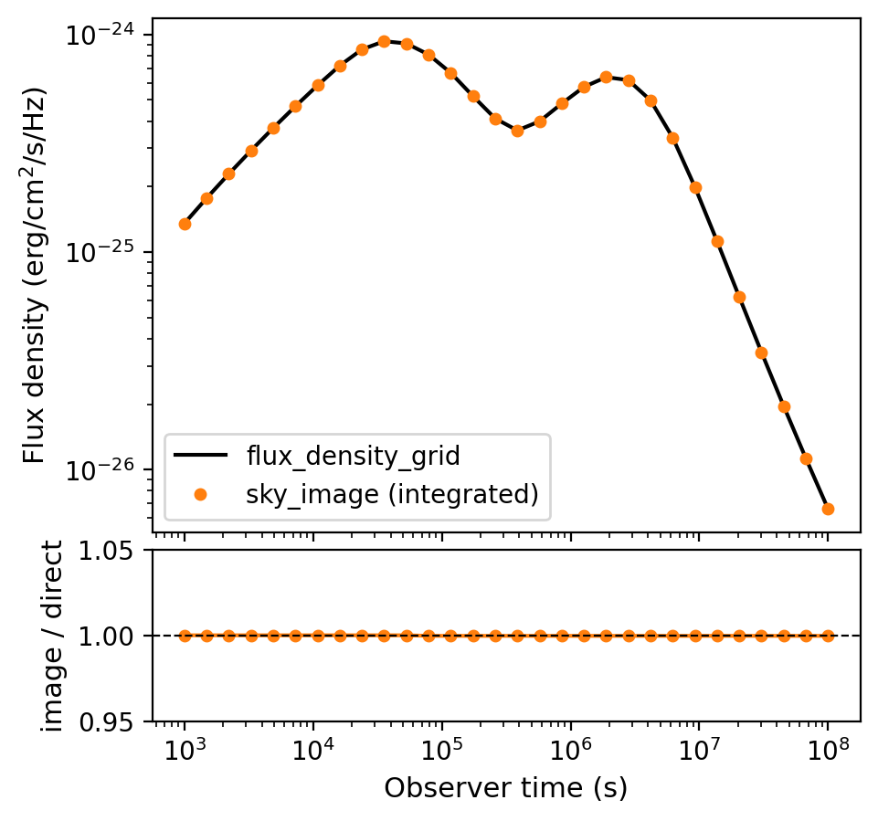

Sky Image
VegasAfterglow can generate spatially resolved images of the afterglow at any observer time and frequency. The sky_image() method uses Gaussian splatting to render each fluid element onto a 2D image plane. Batch evaluation is supported: pass an array of observer times to produce a multi-frame image sequence with minimal overhead (the blast-wave dynamics are solved once, and each frame only re-renders the sky projection).
Single Frame
import numpy as np
import matplotlib.pyplot as plt
from matplotlib.colors import LogNorm
from VegasAfterglow import TophatJet, ISM, Observer, Radiation, Model
from VegasAfterglow.units import uas
model = Model(
jet=TophatJet(theta_c=0.1, E_iso=1e52, Gamma0=200),
medium=ISM(n_ism=1),
observer=Observer(lumi_dist=1e26, z=0.1, theta_obs=0),
fwd_rad=Radiation(eps_e=1e-1, eps_B=1e-3, p=2.3),
)
img = model.sky_image([1e6], nu_obs=1e9, fov=500 * uas, npixel=128)
fig, ax = plt.subplots(dpi=100)
extent = img.extent / uas # convert to microarcseconds
im = ax.imshow(
img.image[0].T,
origin="lower",
extent=extent,
cmap="inferno",
norm=LogNorm(),
)
ax.set_xlabel(r"$\Delta x$ ($\mu$as)")
ax.set_ylabel(r"$\Delta y$ ($\mu$as)")
ax.set_title(r"$t_{\rm obs} = 10^6$ s, $\nu = 1$ GHz")
fig.colorbar(im, label=r"Surface brightness (erg/cm$^2$/s/Hz/sr)")
plt.tight_layout()
{kind=link}

On-axis sky image at \(t_{\rm obs} = 10^6\) s, \(\nu = 1\) GHz. The limb-brightened ring is characteristic of relativistic blast waves viewed on-axis.
Return value (``SkyImage`` object):
img.image: 3D numpy array of shape(n_frames, npixel, npixel)— surface brightness in erg/cm²/s/Hz/srimg.extent: 1D array[x_min, x_max, y_min, y_max]— angular extent in radians (pass directly toimshow(extent=...))img.pixel_solid_angle: pixel solid angle in steradians
Tip
The fov parameter sets the total field of view in radians. Use the uas unit constant
for microarcsecond scale: fov=500*uas gives a 500 µas field of view.
Multi-Frame Movie
Pass an array of observer times to generate an image sequence efficiently:
from matplotlib.animation import FuncAnimation
from IPython.display import HTML
times = np.logspace(4, 8, 60) # 60 frames from 10^4 to 10^8 s
imgs = model.sky_image(times, nu_obs=1e9, fov=2000 * uas, npixel=128)
# imgs.image.shape == (60, 128, 128)
extent = imgs.extent / uas
vmin = imgs.image[imgs.image > 0].min()
vmax = imgs.image.max()
fig, ax = plt.subplots(dpi=100)
im = ax.imshow(
imgs.image[0].T,
origin="lower",
extent=extent,
cmap="inferno",
norm=LogNorm(vmin=vmin, vmax=vmax),
)
title = ax.set_title("")
ax.set_xlabel(r"$\Delta x$ ($\mu$as)")
ax.set_ylabel(r"$\Delta y$ ($\mu$as)")
fig.colorbar(im, label=r"erg/cm$^2$/s/Hz/sr")
def update(frame):
im.set_data(imgs.image[frame].T)
title.set_text(f"$t_{{\\rm obs}}$ = {times[frame]:.1e} s")
return (im, title)
anim = FuncAnimation(fig, update, frames=len(times), interval=100, blit=True)
anim.save("sky-image.gif", writer="pillow", fps=10)
{kind=link}

Off-Axis Observer
For off-axis observers, the image centroid drifts across the sky (superluminal apparent motion):
model_offaxis = Model(
jet=TophatJet(theta_c=0.1, E_iso=1e52, Gamma0=200),
medium=ISM(n_ism=1),
observer=Observer(lumi_dist=1e26, z=0.1, theta_obs=0.4),
fwd_rad=Radiation(eps_e=1e-1, eps_B=1e-3, p=2.3),
)
times_oa = np.logspace(5, 8, 30)
imgs_oa = model_offaxis.sky_image(times_oa, nu_obs=1e9, fov=5000 * uas, npixel=128)
{kind=link}

Off-axis sky image evolution (\(\theta_{\rm obs} = 0.4\) rad) at \(t = 10^5, 10^6, 10^7\) s. The image centroid drifts across the sky (superluminal apparent motion) as the jet decelerates and the beaming cone widens.
Flux from Image vs Direct Calculation
The sky image contains surface brightness in erg/cm²/s/Hz/sr. Integrating over all pixels
(i.e. summing the image and multiplying by the pixel solid angle) recovers the total flux
density, which should match the result from flux_density_grid():
import numpy as np
import matplotlib.pyplot as plt
from VegasAfterglow import TophatJet, ISM, Observer, Radiation, Model
from VegasAfterglow.units import uas
model = Model(
jet=TophatJet(theta_c=0.1, E_iso=1e52, Gamma0=200),
medium=ISM(n_ism=1),
observer=Observer(lumi_dist=1e26, z=0.1, theta_obs=0),
fwd_rad=Radiation(eps_e=1e-1, eps_B=1e-3, p=2.3),
)
t_obs = np.logspace(3, 8, 30)
nu_obs = 1e9
# Method 1: integrate sky image
img = model.sky_image(t_obs, nu_obs=nu_obs, fov=2000 * uas, npixel=128)
flux_from_image = img.image.sum(axis=(1, 2)) * img.pixel_solid_angle
# Method 2: direct flux density calculation
flux_direct = model.flux_density_grid(t_obs, np.array([nu_obs])).total[0, :]
# Plot comparison
fig, (ax1, ax2) = plt.subplots(2, 1, figsize=(5, 5), dpi=150, sharex=True,
gridspec_kw={"height_ratios": [3, 1], "hspace": 0.05})
ax1.loglog(t_obs, flux_direct, "k-", label="flux_density_grid")
ax1.loglog(t_obs, flux_from_image, "o", ms=4, color="C1", label="sky_image (integrated)")
ax1.set_ylabel(r"Flux density (erg/cm$^2$/s/Hz)")
ax1.legend()
ratio = flux_from_image / flux_direct
ax2.semilogx(t_obs, ratio, "o-", ms=4, color="C1")
ax2.axhline(1, color="k", ls="--", lw=0.8)
ax2.set_ylabel("image / direct")
ax2.set_xlabel("Observer time (s)")
ax2.set_ylim(0.95, 1.05)
plt.tight_layout()
{kind=link}

Comparison of flux density obtained by integrating the sky image (orange dots) versus the direct flux_density_grid() calculation (black line). The bottom panel shows the ratio, confirming agreement to within a few percent.
Note
The two methods agree to within a few percent. Small differences arise because the image
uses a finite field of view and pixel resolution. Increasing npixel and fov improves
the agreement.
Note
For a complete working example with animations and plots, see script/sky-image.ipynb.